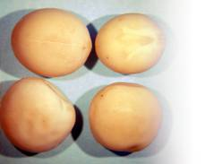

Фасолевая зерновка

Этот вредитель, представляющий большую опасность для растений, распространен в регионах, где высока концентрация посевов фасоли: в Краснодарском крае, Грузии, Крыму, на Украине, Черноморском побережье Кавказа. Переносится насекомое обычно с поврежденным зерном фасоли.
Жуки способны перелетать на большие расстояния, выбираясь из складских помещений и зерновых хранилищ, переходя на побеги фасоли в полевых условиях.
Жуки фасолевой зерновки бурого цвета. На темных надкрыльях четко просматриваются с ветлые продольные пятна.

Обработка карбофосом проводится на участках с горохом, предназначенным на получение семян (60 г препарата на 10 л воды)
Попав со склада или вместе с пораженной фасолью на посевы, женские особи жука откладывают яйца непосредственно в бобах, предварительно прогрызая там отверстия поближе к семенам.
Яйца быстро переходят в фазу превращения в личинки и через неделю при температуре 31 °C из них появляются личинки. При комнатной температуре этот процесс затягивается на 1,5 месяца.
Особенно высока активность фасолевой зерновки в годы с высокой влажностью воздуха в летний период.
В крупных зернах фасоли обычно размещается несколько личинок.
Личинка окукливается в фасоли и через 3 недели превращается в жука, который тут же вылетает из поврежденного зерна.
Меры борьбы
Не следует запаздывать с уборкой урожая фасоли. Лучше снимать весь урожай до растрескивания бобов.
Поврежденные зерновкой партии продовольственной фасоли прогрейте при температуре 60 °C в течение часа, и тогда жуки погибнут полностью.
Подобный же эффект дает и промораживание продовольственного зерна в сухих холодильных камерах, на чердаках, в хозблоках, на дачах. Тщательно проверяйте семена перед посевом, не допуская поврежденных.